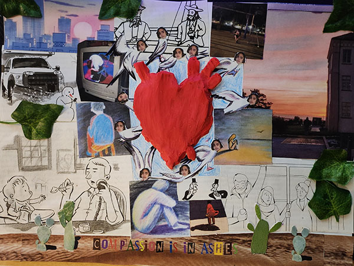

This a collage created in 2022 meant to display a lack of compassion in the world. With the outer edges depicting images meant to invoke a feeling of loneliness. A clay heart can be seen in the very center with doves emerging meaning to depict the spread of compassion. Below a desolate desert with the words "compassion is in ashes” lays with several spineless cacti with the spineless cacti an allegory for how one must let down their inner walls and fears of others to let people in.